아스텔라 제2부 · 인간형 스테이지 의례체 15안
사용자의 최신 교정인 인간형 체형을 반영해, 1~5스테이지 의례체를 각각 세 안씩 새로 제작했습니다. 약 7~8등신의 머리·목·흉부·허리·골반·상하완·긴 허벅지와 종아리를 분명히 유지하고, 층별 개성은 외피·자세·몸통 범위의 기관과 등 장치로 표현합니다. 거대한 묘비·가마통·성배·건물이 신체가 된 이전 방향은 폐기했습니다. 이미지를 누르면 1536 × 1024 원본 PNG가 열립니다.
Stage01 · 기억을 흘리는 정찰병

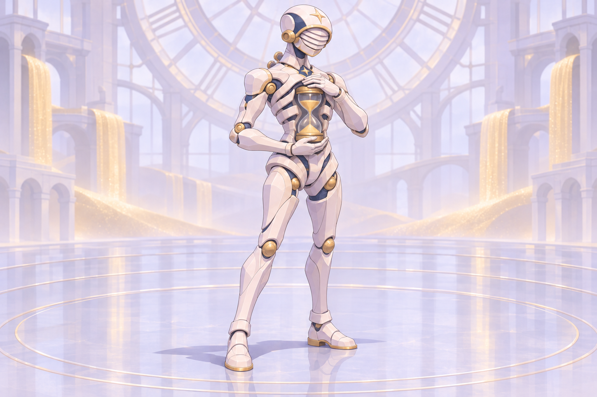

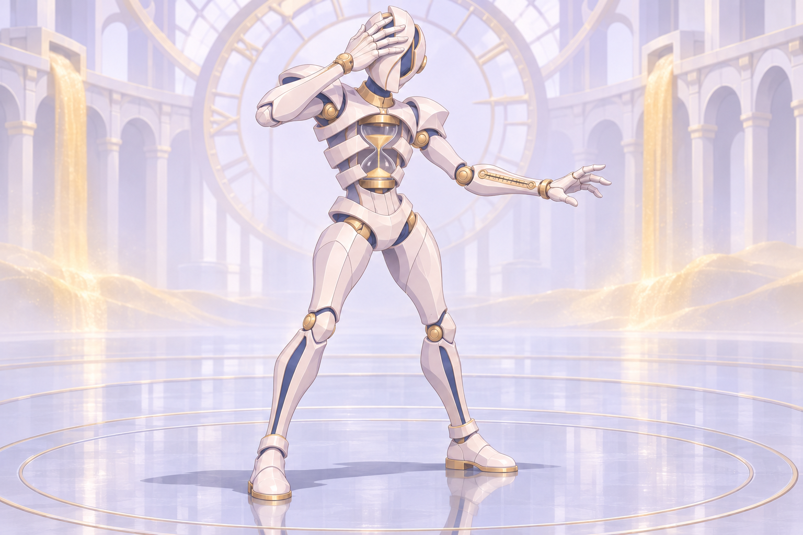

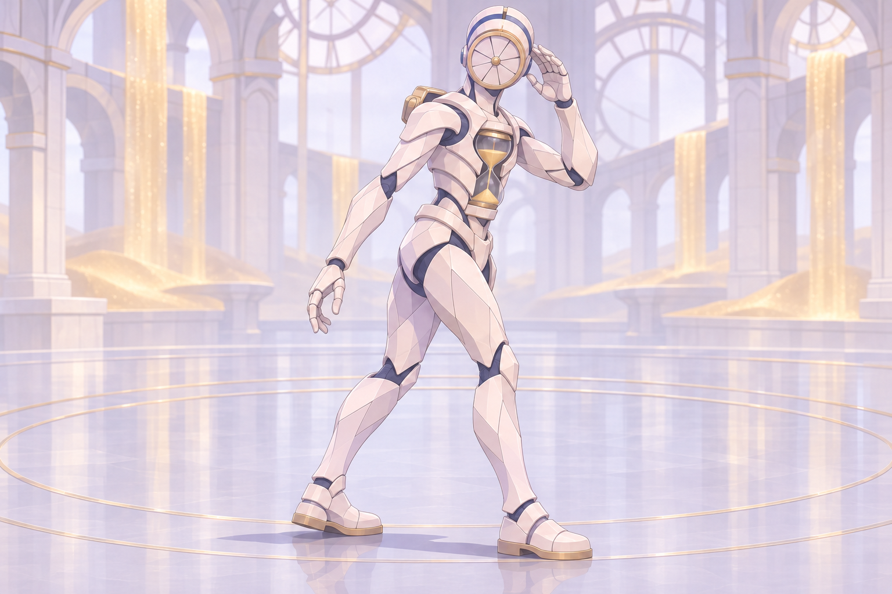
Stage02 · 끝나지 않는 진혼곡의 무희

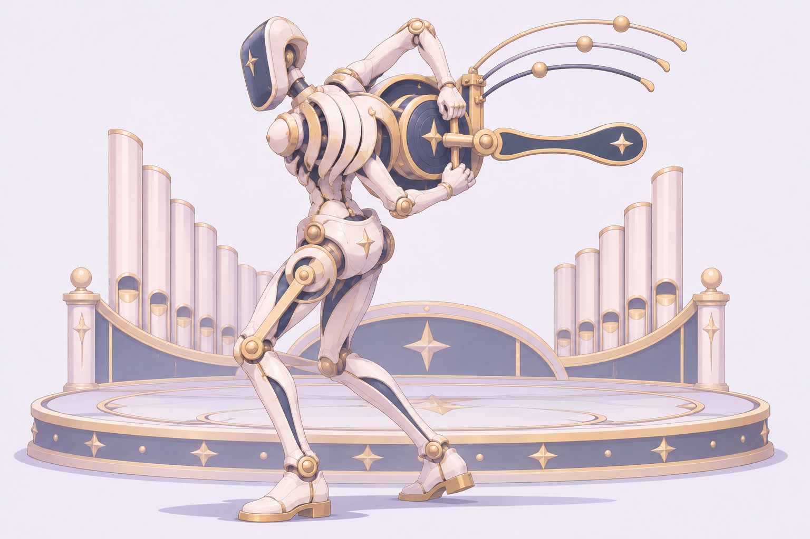

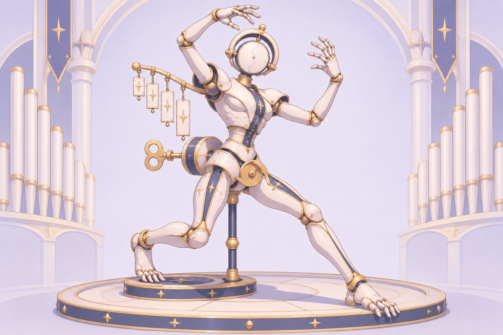

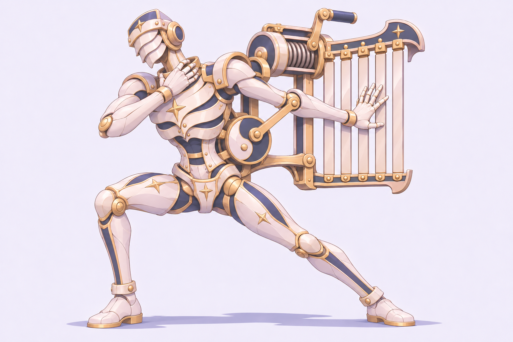
Stage03 · 얼어붙은 혈관의 연금술사

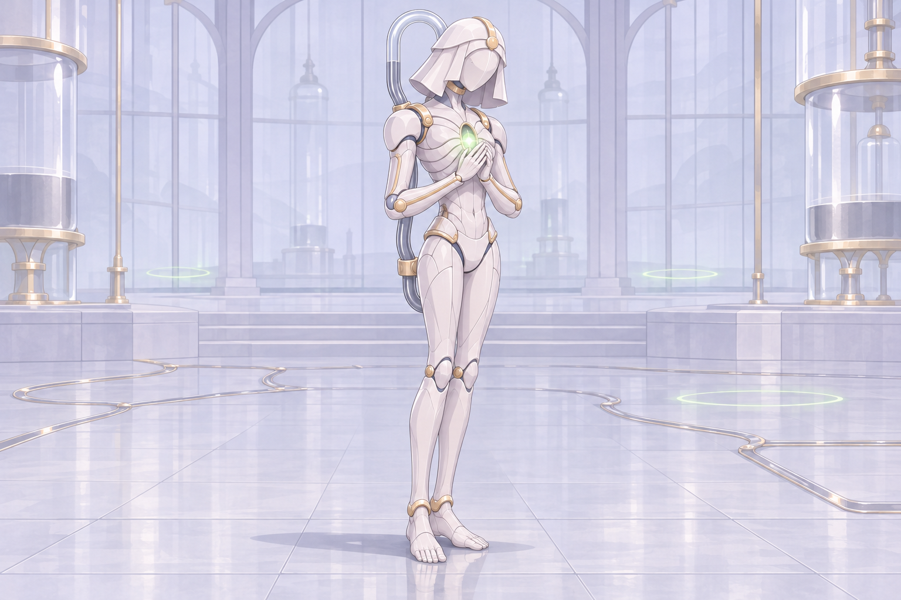

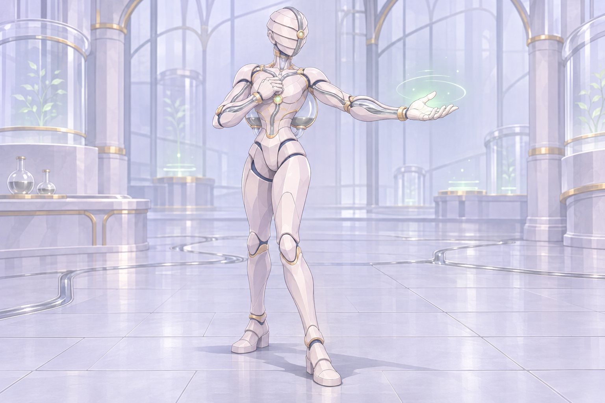

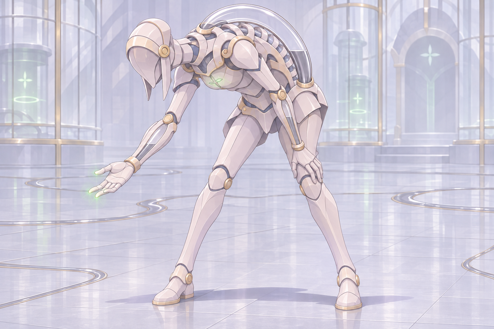
Stage04 · 영원히 타오르는 가마의 수호자

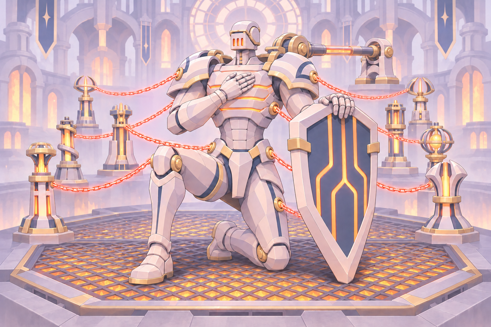

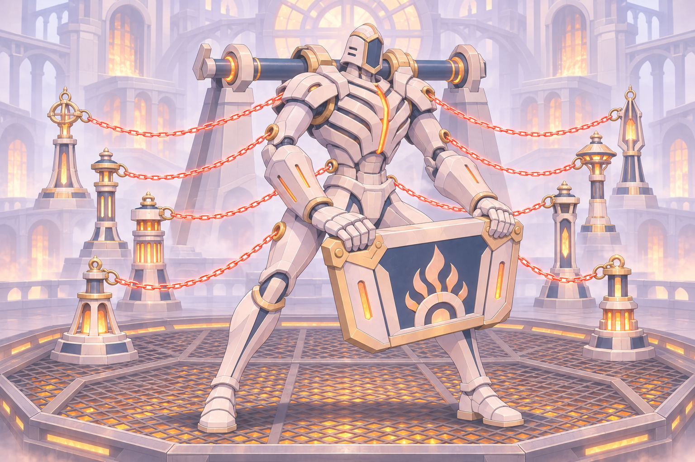

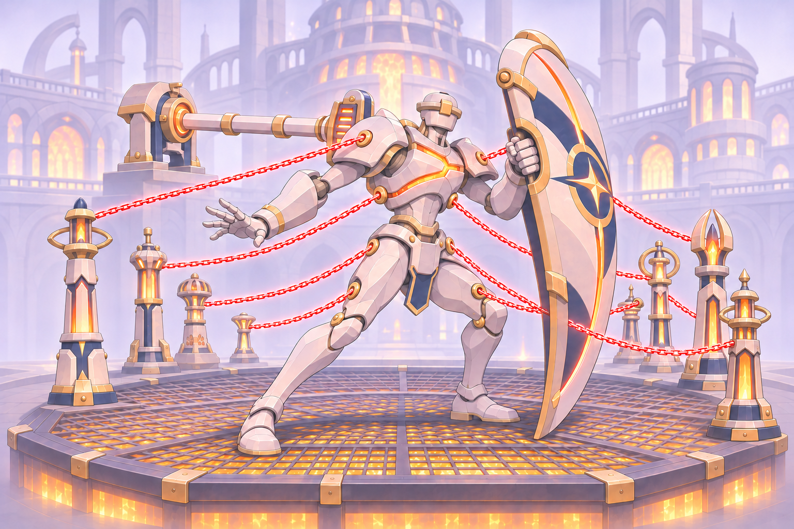
Stage05 · 무너진 천구를 떠받치는 부단장

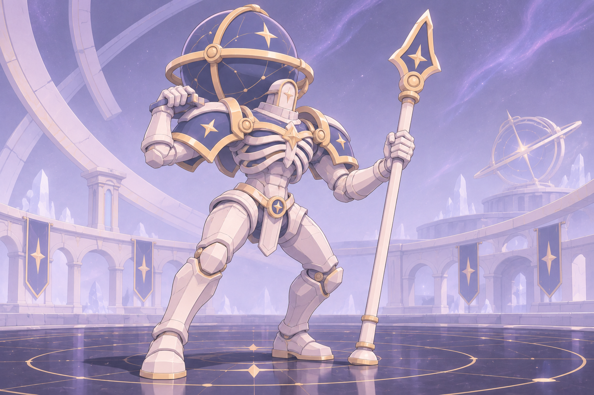

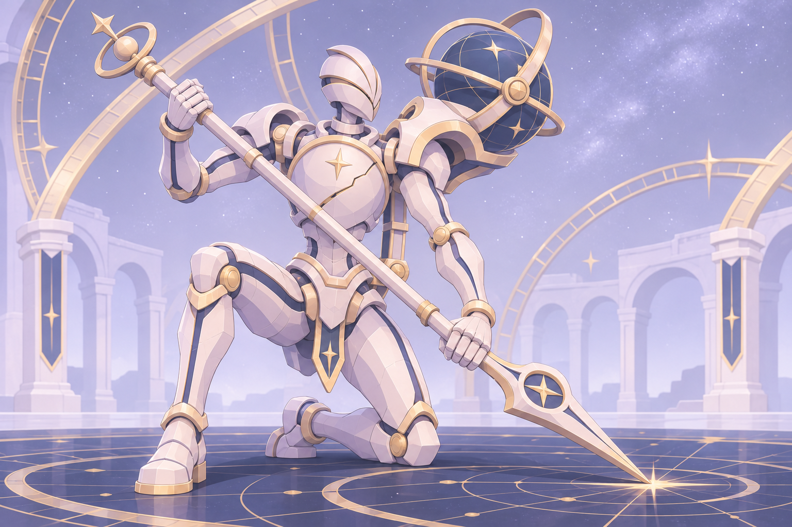

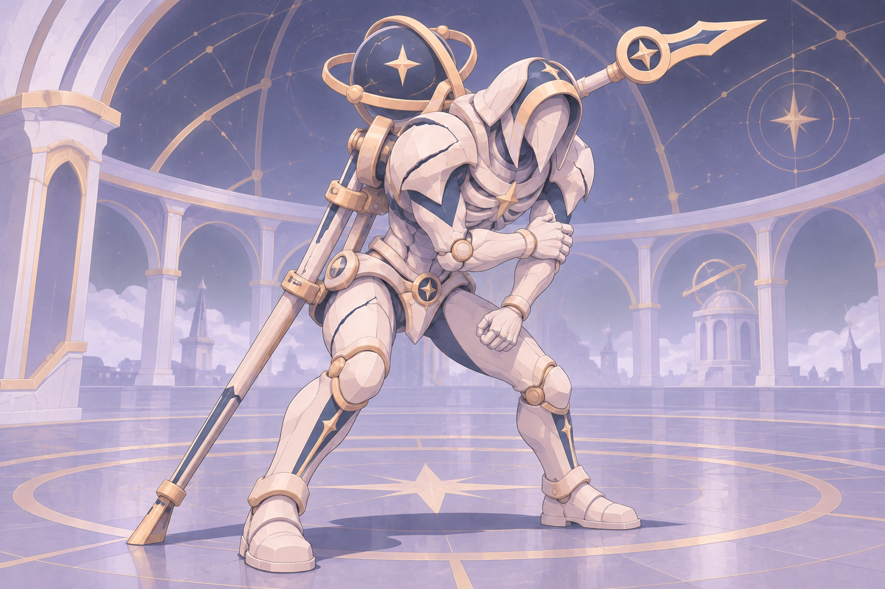
제작: 내장 image_gen. 단일 전신 컨셉샷이며 실제 3D 메시나 회전 렌더는 아닙니다. 전체 프롬프트 · 공통 아트 방향